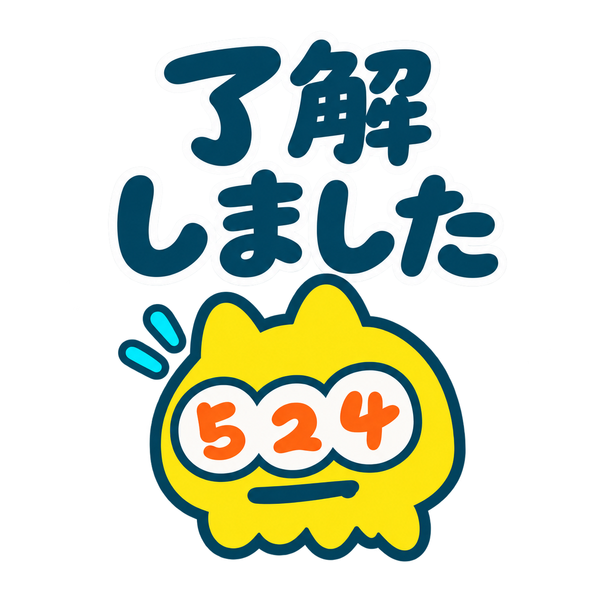
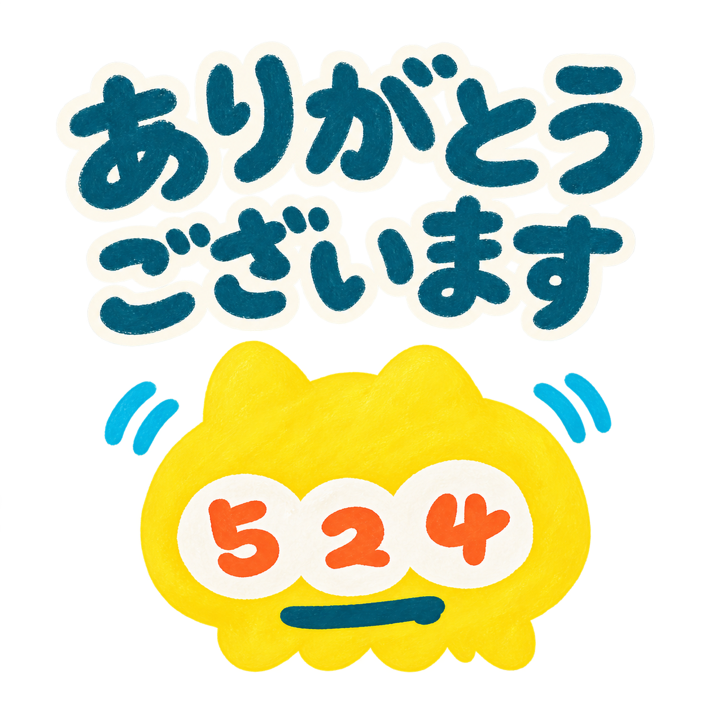
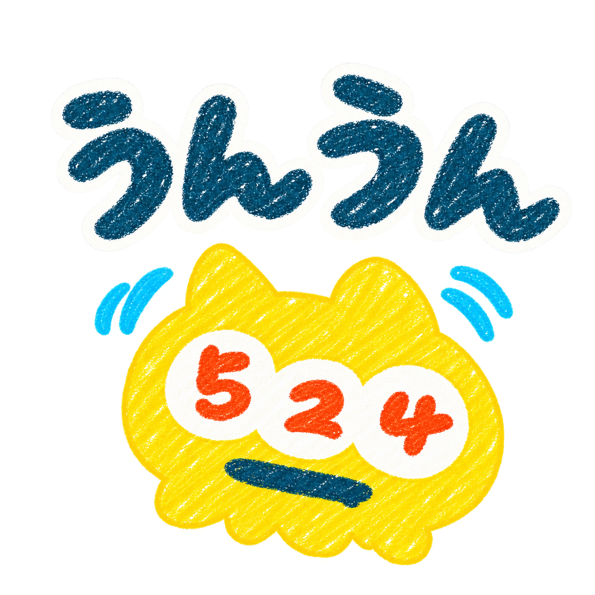
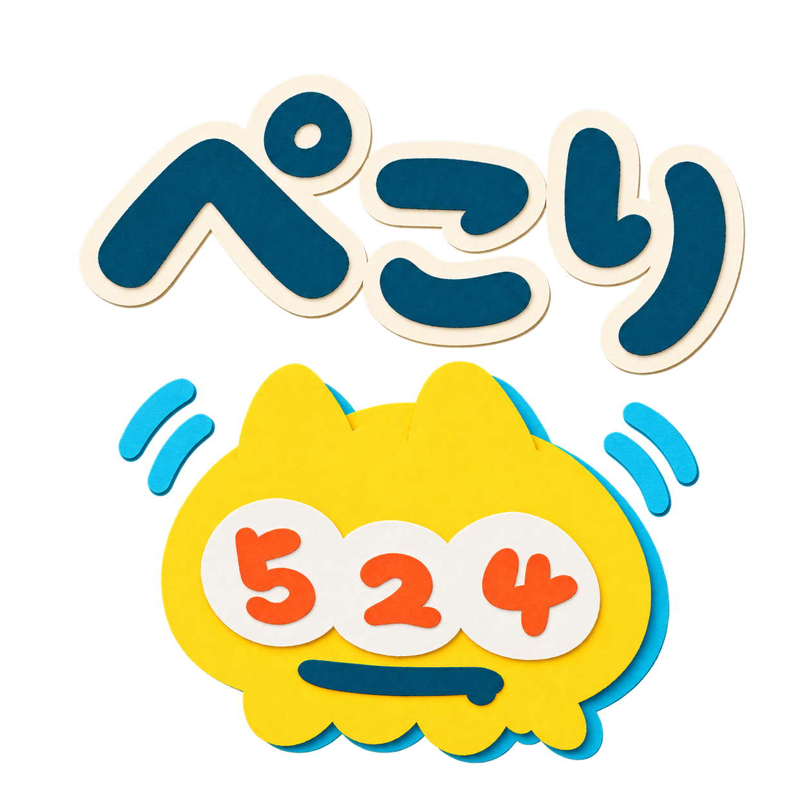

返事に添える
確認や了解など、日常の短いやりとりに使う言葉。
524 / LINE STICKERS
「了解しました」「ありがとうございます」など、日々のやりとりに添える言葉と、524の表情を紹介するページの見本です。

524A LITTLE WORD FOR EVERY DAY
スタンプを見つけてもらい、使う場面を想像できるように紹介します。
確認や了解など、日常の短いやりとりに使う言葉。
感謝やうなずきなど、文章だけでは伝えにくい表情。
524の見た目や言葉づかいを、画像と一緒に紹介します。
STICKER PREVIEWS
524の既存キャラクター画像を掲載しています。収録セットや販売状況を示すものではありません。



このページについて：524のキャラクター画像を使ったLP構成サンプルです。スタンプセット名・収録数・価格・販売状況・購入先URLは設定していません。
IN A CHAT
スタンプを使う場面が伝わる、トーク画面のレイアウト例です。
実際のLINEアプリやトークには接続していません。
ABOUT THE CHARACTER
このページでは、キャラクター「524」を使ったスタンプ紹介LPの見せ方を提案しています。商品や販売状況を決めつけず、画像・使う場面・購入情報を分けて案内する構成です。
販売情報が決まった後に、公式の商品名・セット内容・購入先へのリンクを追加できる設計を想定しています。
NEXT INFORMATION
購入案内を追加する際は、確定した商品情報と公式リンクを使います。
商品名、収録数、価格、販売状況、購入先URLを確定してから掲載する想定です。
商品情報は未設定スタンプ画像と使う場面を見て、公式の販売ページへ進む導線の見本です。
購入リンクは未設定524 / STICKER PAGE CONCEPT
キャラクター画像を生かした、商品紹介LPの構成サンプルです。
販売・購入・LINE連携の機能はありません。